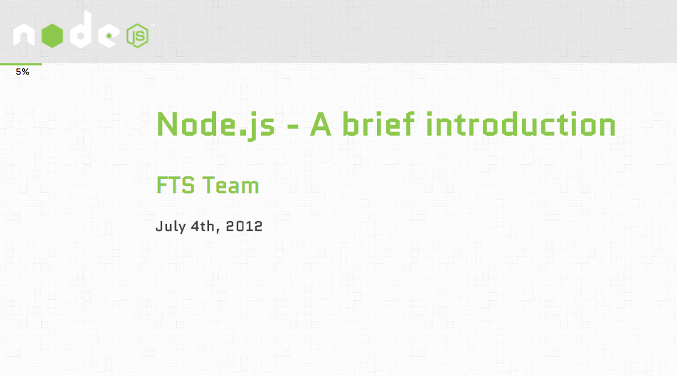

flyingSparx
ScriptSlide
*Your organisation*
Blah
Contents
- Navigating the slideshow
- Adding content to the slides
- Change the styles and structure of the presentation
Navigating
- Use the arrow keys (left and right) to change slide
- To go directly to a slide, use the menu at the bottom
- Each slide provides a unique hash URL so that slides can be accessed directly from the address bar
Adding Content
- Slides are between <section> ... </section> elements
- Give each slide <section> a unique but relevant id
- The id of each slide is then automatically added to the slide menu for immediate access
- You can now add content (e.g. lists, images, embedded movies, etc.) to each slide using standard HTML
Editing Styles and Structure
- Use the ScriptSlide JavaScript file for general/structural styles
- Use Styles CSS file for element styles
Editing js/scriptslide.js
- Change logo, background image, bullet point image
- Change colour of header, slide menu
- Change colour of author text
- Change colour of slide menu text
- Change colour of progress bar and text
Editing css/styles.css
- Change global font (or add font-styles for any element)
- Change colours and text styles for various common elements
- Change the bullet pointed item styles
- Add custom styles for other elements you want

Example
- Click here for an example of (a slightly older version of) ScriptSlide in use